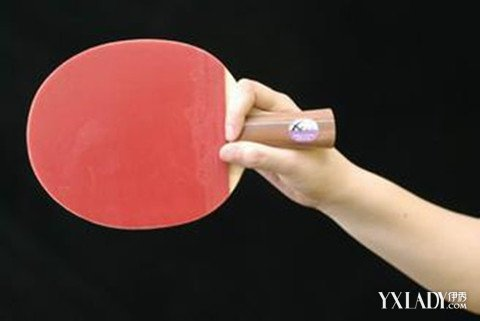

1.横拍握法
直拍握法是最常见的乒乓球握法，适用于发力击球。握住球拍柄的底部，大拇指紧贴在拍柄的左侧，食指扣住拍柄，形成一个圈状。其他三指自然弯曲顶住球拍的中部，三指都要与拍接触并且用力顶住。这种握法适合打弧圈球。
2.直拍握法
横拍握法是将球拍柄贴着食指和中指的指缝，大拇指自然贴在拍柄的右侧。这种握法可以使手腕在击球时更加灵活，活动更好。横拍握法适用于台内的控制球和旋转，但在反手进攻方面相对较弱。
3.侧握法
侧握法是指运动员握住球拍的手掌向外，大拇指贴在拍柄的左侧。这种握法有利于发挥手腕的力量，适合快攻和发力击球。
4.反手握法
反手握法是将球拍柄贴着小指和无名指的指缝，大拇指自然贴在拍柄的左侧。这种握法可以更好地发挥反手进攻的优势，适合打击力和旋转较强的球。
1.平击发球
特点：有正手平击发球和反手平击发球两种，是最基本的发球技术，也是初学者掌握发球的入门技术。
动作要点：正手平击发球：左脚稍前，抛球的同时转体手臂向身体右后方引拍，当球下降稍高于球网，手臂向左前方发力，挥拍击球中上部，顺势还原;反手平击发球：右脚稍前或平站，抛球的同时转体手臂向身体左后方引拍，当球下降稍高于球网，手臂向右前方发力，挥拍击球中上部，顺势还原。
2.正手左侧上、下旋球
特点：指发球员在正手位由右向左挥拍摩擦球，球速较慢但左侧上（下）旋转力较强。 对方平接回接时，球向发球员的左侧上方（即接发球员的右侧上方）飞出，叫做正手发左侧上旋；若球向发球员的左侧下方（即接发球员的右侧下方）下网，叫做正手发左侧下旋球。
动作要点：正手发左侧上旋球时，手臂自右上方向左下方挥摆，球拍从球的右侧中下部向左侧面摩擦正手发侧下旋球时，手臂自右后上方向左前下方挥摆，球拍从球的右侧中下部向左侧下部磨擦。
3.反手右侧上、下旋球
特点：指发球员在身体的反手位由左向右挥拍磨擦，球速较慢，但右侧上（下）旋转力较强。对方平挡回接时，球向发球员的右侧上方（即接球员的左侧上方）飞出，叫做反手发右侧上旋球；若球向发球员的右侧下方（即接球员的左侧下方）下网，叫做反手发右侧下旋球。
动作要点：反手发右侧上旋球时，执拍手由左上方经身前向右下方挥摆，触球的拍面从球的左中下部左侧上部摩擦。反手发右侧下旋球时，执拍手由左后上方向右前下方挥摆，触球时拍面从球的左侧中下部向右侧下部摩擦。同时，应注意配合转体动作使腰、臂协调用力有利于增大发球的速度和力量，增强球的旋转。
4.高抛式发球
特点：利用抛球高，待球下落时的加速度增大对球拍的压力，从而加快了发球的速度和突然增加对方接发球的难度，为抢攻或抢拉创造有利条件。具有出手快、飞行急、旋转强、变化多的特点。
动作要点：高抛发球站位一般在左半台，侧身正手高抛发球。击球的要点和低抛基本相同，发球时应注意有旋转变化，还应有长、短落点和斜、直线变化。
1.推挡球
特点：推挡球包括平挡、快推、加力推、推挤、推下旋、减力挡等。它是控制球速、落点和稳定球性的有利手段。是初学者首先应该学习的技术，因此，要想学好打乒乓球，必须打好该项技术的基础。
动作要点： 两脚平行或左脚稍前站立。身体离球台40~50厘米,两脚开立约与肩宽，两膝微屈。球拍置于腹前，上臂带动前臂沿台面做平行挥动。击球拍形呈半横状，约与台面垂直，在击球的上升期击球的中部，以借助对方来球的反弹力将球击回。
2.攻球
(1)正手快攻
特点： 站位近、动作小、速度快。比赛中能以攻守对付对方进攻，是进台快攻打法使用最多的一种攻球技术。
动作要点：判断来球，选好站位。引拍于身体右侧方。击球时，右脚蹬地，转腰、并向前移动重心至左脚。同时，上臂带动前臂向前向左上方挥拍，手腕配合前臂旋内转动做内收，在来球的上升期击球的中上部。击球后，执拍手及身体各部位迅速放松，随势挥拍至前额，立即还原。
(2)反手快攻
特点 ：动作特点同正手快点，它是横拍打法常用技术之一。
动作要点：站位近台偏左，两脚平行站立，身体前倾，上臂自然地靠近身体，前臂迅速伸入台内迎球。击球前，肘关节自然弯曲，引拍至腹部左侧前，拍柄稍向下。击球时，前臂做旋外并稍加用力带动手腕向右前方挥动，肘略往后，拍形稍前倾，在来球的上升期击球中上部。拨球后，球拍随势前送迅速还原。
3.搓球
搓球技术特点：搓球是近台和台内回击下旋球的一种比较稳定的技术。它与削球的主要区别是站位近、动作小、由于具有旋转、速度、落点变化，常用于接发球或搓球过渡，为进攻创造机会。
搓球动作特点：动作较大，击球节奏和球速较慢，带下旋，较为稳定。
动作要点：站位偏左台，两脚左右开立。反（正）手搓时，向左（右）上方引拍，拍形稍后仰。正手搓时，身体稍向右转。击球时，前臂作旋内转动，手腕配合用力，由上向前下方挥拍。在来球的下降前期或高点期，摩擦球的中下部或中部偏下，同时身体重心应向前移动。击球后，手臂立即放松，随势前送、迅速还原。